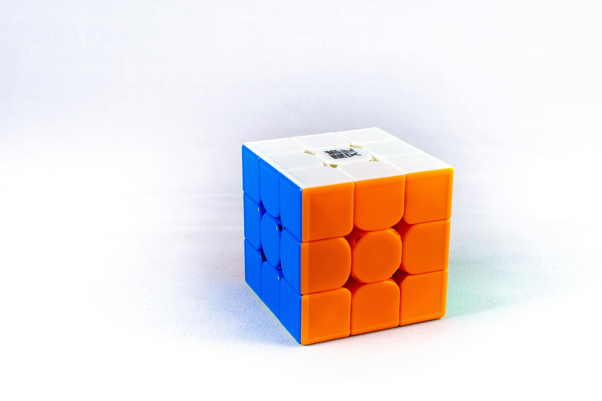
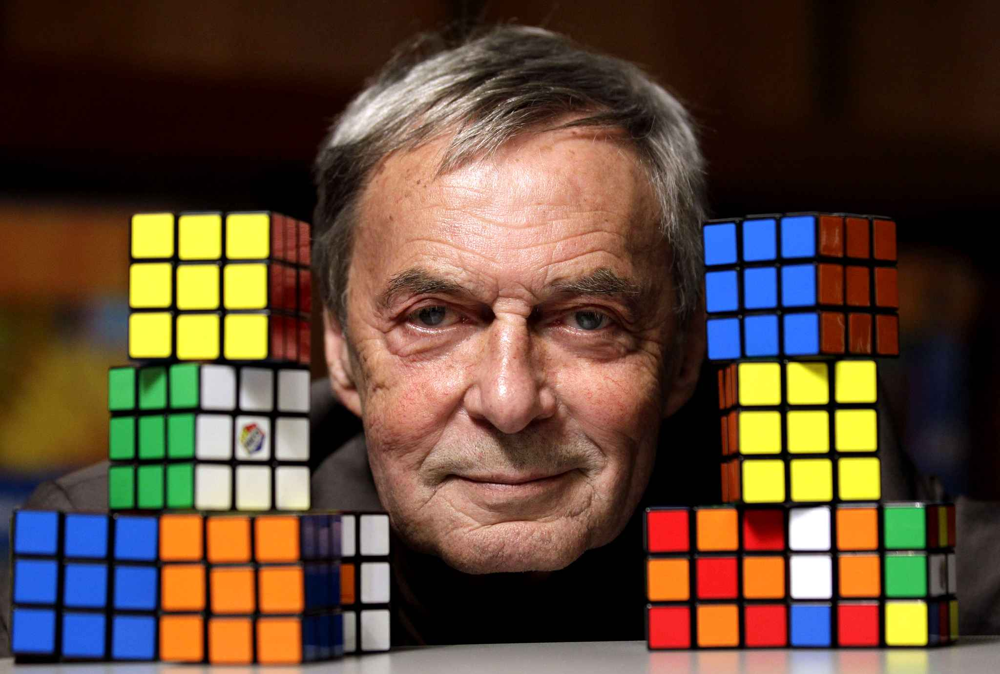
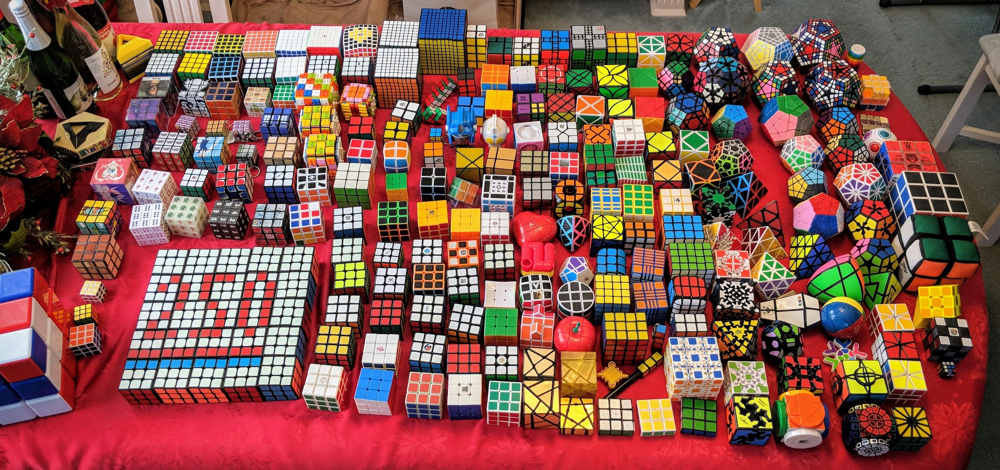
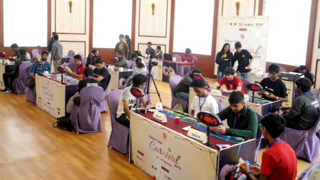

Un cubo de Rubik es un puzzle 3D de seis caras donde cada cara se representa con un color diferente. En un cubo clasico 3x3 cada cara está cubierta por 9 pegatinas. La mecánica de este puzzle se basa en los ejes de rotacion que permiten que las piezas se puedan desordenar hasta convertirse un caos de colores, a esto se el conoce como un scramble. Un cubo de Rubik tiene más de 43 quintillones de combinaciones (43.252.003.274.489.856.000) o casos diferentes. El reto del cubo de Rubik consiste en llevar todas sus piezas a su posicion original.
¿Qué es un cubo de Rubik?
¿Cúal es su historia?
Un arquitecto de origen Húngaro llamado Ernő Rubik en su momento ejercia como profesor de arquitectura. Buscaba la manera de enseñar a sus estudiantes el movimiento a tres dimensiones haciendo uso de materiales economicos. De alguna forma teminó inventando el cubo de Rubik y lo llamó Cubo Mágico. El invento del arquitecto logró popularizarse a gran escala en la época de los años 80.
El cubo de Rubik hoy
A pesar de que hoy (marzo de 2025) ya han pasado casi 50 años desde que se inventó el cubo de Rubik, este sigue siendo popular. El cubo de Rubik es un puzzle que todos conocen y con el que muchas personas de diferentes edades han podido interactuar. Con el pasar del tiempo se ha creado una entera comunidad que ha diseñado variantes del puzzle original haciendo uso de colores, formas y mecanismos diferentes. Dentro de esta comunidad del cubo de Rubik están los coleccionistas y los speedcubers. Osea, gente que busca tener una inmensa variedad de puzles diferentes y gente que se dedica constantemente a resolver el cubo de Rubik en el menor tiempo que les es posible.
 